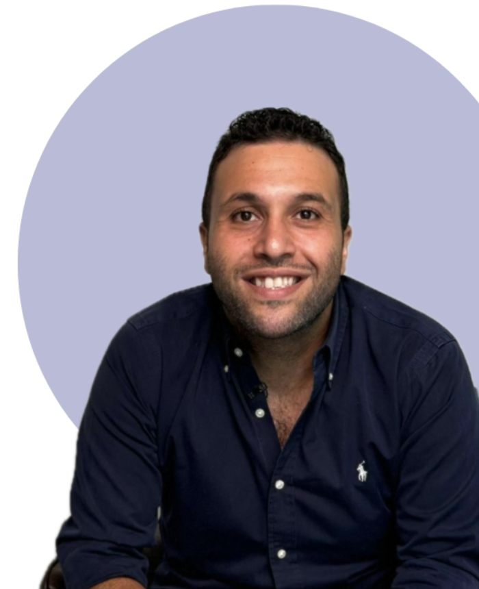

Mahmoud Zaki
Counseling Psychologist · Founder of Self Center
Mahmoud is a leading eating-disorders therapist in Egypt who has worked over the past 10 years with individuals and families to overcome maladaptive eating behaviors, bariatric surgery rehabilitation, addiction, and body-image issues — in addition to related struggles such as grief, trauma, mood, and personality disorders.
He was trained with and is associated with the UK’s National Centre for Eating Disorders (NCFED) and the British National Centre of Excellence for Eating Disorders (NCEED), after completing his master’s degree in counseling psychology at the University of Westminster. He also holds a diploma in addiction and behavior management from the Net Institute (USA) and the Sports Mental Health Diploma from Western University, Canada.
Mahmoud is the author of three Arabic books on mental health — “Bartaman Nutella,” “1/4 Gramme Sokar,” and “The Joker’s Tales” — and the founder of SELF-ED, the first Arabic/English online platform raising awareness about eating problems and mental health in the Middle East.